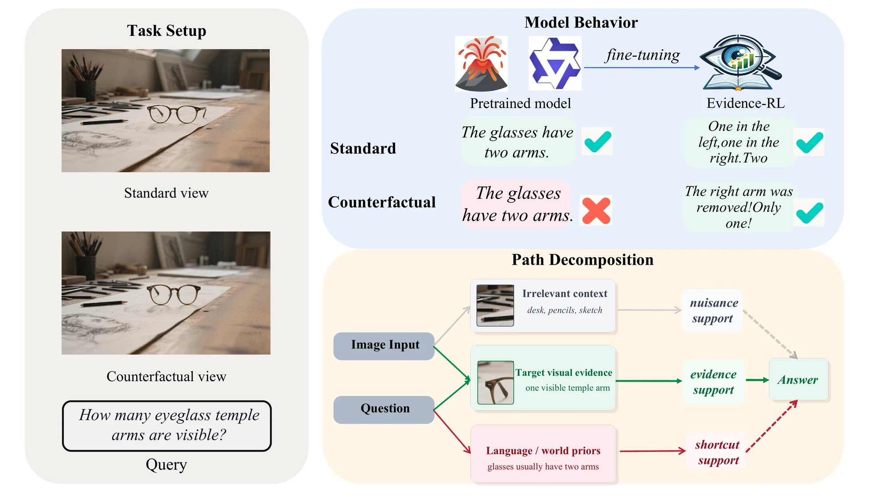
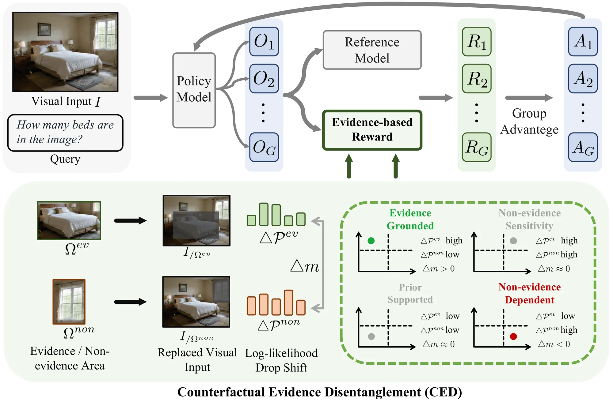
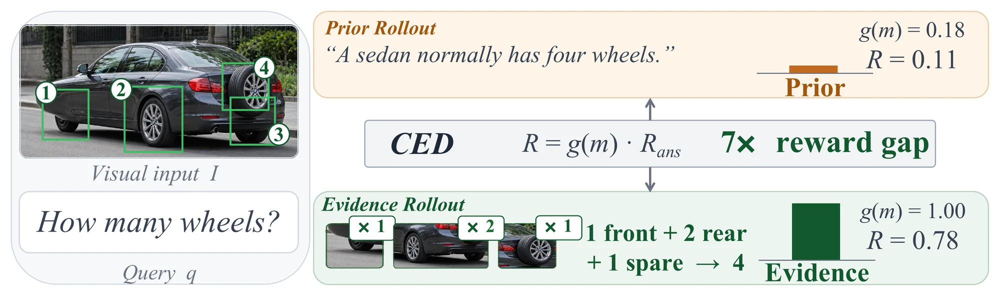
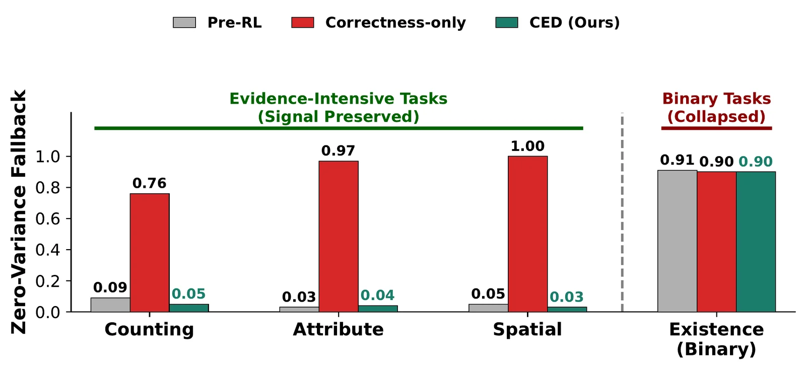
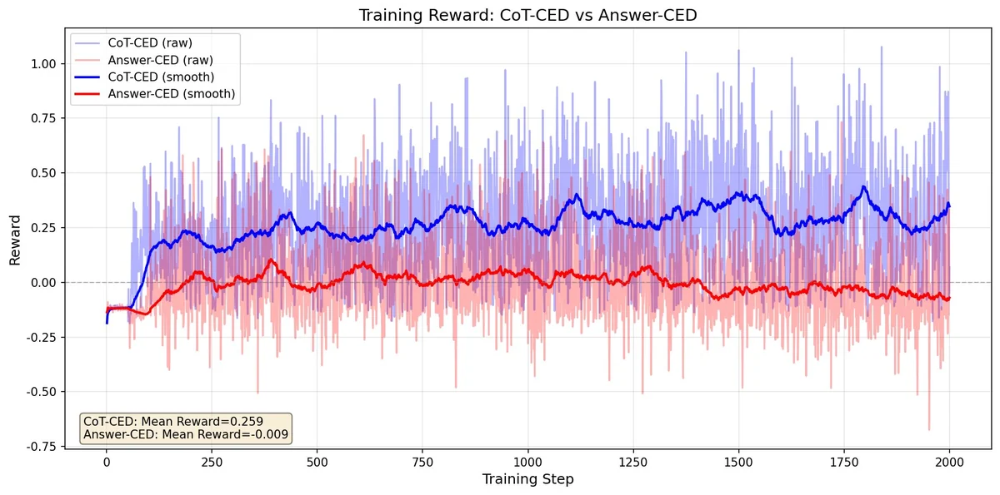
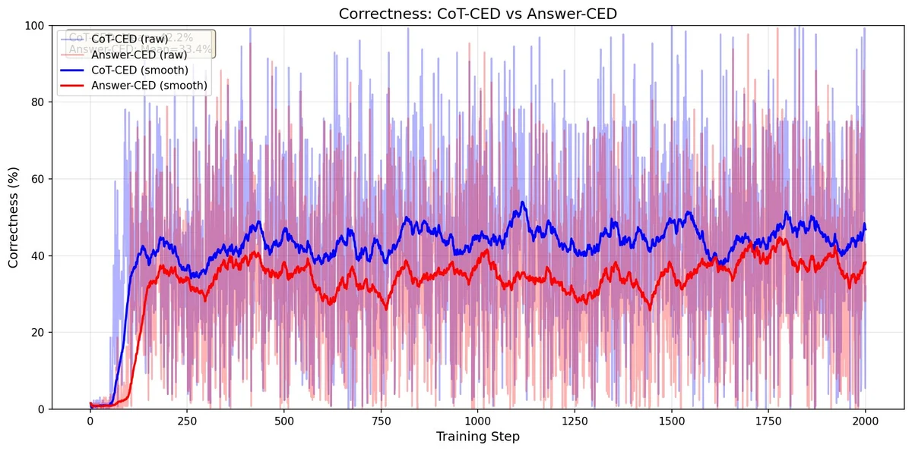
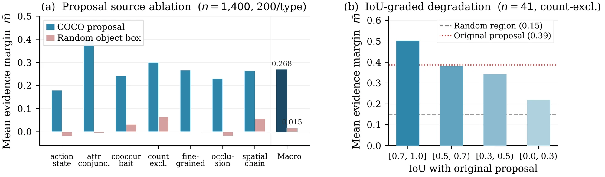

TL;DR
VLMs should answer from visual evidenceThe specific image region that causally supports the answer, not the entire image or irrelevant context., not language priorsDataset regularities, common sense, and world knowledge that allow correct-looking answers without actually inspecting the relevant image content.. We use CEDCounterfactual Evidence Disentanglement: a training-time probe that neutralizes an Evidence Region and compares the support drop against matched non-evidence Regions, measuring whether the answer causally depends on the right visual content. to train grounded reasoning.
Qwen2.5-VL-7B
Qwen3.5-9B
with non-negative gain
CED is training-time only
Vision-Language Models often produce correct-looking answers by relying on language priors and dataset shortcuts rather than the visual evidence in the image. We propose Counterfactual Evidence Disentanglement (CED), a training-time evidence audit that tests whether a sampled answer causally depends on the local evidence that supports it. CED neutralizes an object-centric Evidence Region and compares the resulting support drop against matched non-evidence Regions, then combines this signal with answer correctness inside GRPO. Across nine benchmarks and four backbones, Evidence-RL outperforms prior RL-based post-training methods with no inference-time overhead.
Why Visual Evidence Matters
VLMs are increasingly used as general-purpose visual reasoners, but correct-looking answers need not be visually grounded. A model may answer a counting or spatial question by inspecting the relevant evidence, or by relying on language priors, dataset regularities, and scene-level common sense — a failure pattern documented across hallucination, counting, spatial, and shortcut-reasoning evaluations. Post-training can amplify either behavior depending on what the training signal can observe.
Recent perception-aware methods (PAPO, VPPO) reintroduce the image into the post-training loop, but they target coarse visual dependence rather than causal evidence dependence. In general, the image is not a single cause — it contains the target evidence, irrelevant context, visually salient distractors, and intervention artifacts. A global perturbation can show that the model is sensitive to the image, but it cannot tell whether the current answer specifically depends on the local evidence that would falsify it if removed.

Left: Task setup with a counting query over two views of the same scene. Upper right: A pretrained VLM gives the same prior-based answer for both views; Evidence-RL inspects the visual evidence and adjusts its answer when the scene changes. Lower right: Causal path decomposition — a candidate answer can be supported by the target visual evidence, by irrelevant context, or by language priors, which motivates CED to test whether the response depends specifically on the evidence path.
Key Insight: Instead of asking whether the model uses the image (coarse visual dependence), we should ask whether the answer depends on the particular visual evidence that supports it (counterfactual evidence dependence), while discounting nuisance sensitivity to other regions.
Counterfactual Evidence Disentanglement
Evidence-RL is a training-time pipeline: sample a candidate answer, contrast the proposed Evidence Region with matched non-evidence Regions, intervene in feature space, compute an answer-conditioned evidence margin, and use the resulting reward in GRPO. The counterfactual audit is used only during training; inference uses the trained VLM normally with no additional overhead.

Overview of Evidence-RL during post-training. A policy samples candidate answers, and CED scores each answer by applying the same feature-space intervention to the proposed Evidence Region and to matched non-evidence Regions. The contrastive support drop yields an evidence margin, which is combined with correctness to form the GRPO reward. The counterfactual audit is used only during training; inference uses the trained VLM normally.
CED: Evidence Margin
Given image $I$, question $q$, and candidate answer $y$, we identify an Evidence Region $\Omega^{\mathrm{ev}}$ and $K$ non-evidence Regions $\{\Omega^{\mathrm{non}}_k\}$. For each region, we intervene by replacing its visual tokens with the mean of neighboring tokens — removing region-specific information while preserving the local representation manifold. The evidence sensitivity is the counterfactual log-likelihood drop:
To obtain a bounded, contrastive score, we compare evidence-region sensitivity with non-evidence sensitivities:
A positive margin indicates that the answer depends more on the proposed Evidence Region than on area-matched non-evidence Regions. Non-evidence Regions define a sample-local null distribution: if a response is sensitive mainly to generic masking artifacts, the evidence and non-evidence interventions produce comparable drops, yielding a low margin.
CED-Guided GRPO Reward
The evidence margin is integrated into GRPO as a correctness-anchored reward. When the answer is correct, the evidence gate $g(m)$ favors responses with stronger Evidence Region support. When the answer is wrong, the evidence term becomes a bounded tiebreaker. Correctness remains the dominant gradient driver, while CED ranks equally correct rollouts by evidence support:
Design Principle: CED scores each sampled answer by its causal dependence on the evidence region, using local feature-space interventions that are answer-specific, evidence-localized, and less confounded by intervention noise. It requires only weak object-level proposals (e.g., COCO annotations), no question-specific evidence labels.
Nine-Benchmark Results
Evidence-RL obtains the highest average score and the largest mean improvement (+5.94) in the matched-backbone comparison on Qwen2.5-VL-7B. It is the only RL method with non-negative gains on all nine benchmarks. The largest gains appear on perception-heavy benchmarks (VLMsAreBlind +7.58, FREAK +14.22, MMMU +6.84), while general reasoning benchmarks remain positive. This pattern supports the intended role of the reward: increasing reliance on visual evidence without sacrificing general transfer.
Table 1. Nine-benchmark evaluation using Qwen2.5-VL-7B as the base model for Ours. Best bold; second-best underlined.
Cross-Backbone Transfer
The same recipe transfers across four backbones from two model families: Qwen2.5-VL-3B/7B, Qwen3-VL-8B, and Qwen3.5-9B. Evidence-RL yields positive mean improvement on every backbone and non-negative gains on all 36 benchmark–backbone cells. The Qwen3.5-9B configuration achieves +11.34 average gain, with 3-seed validation confirming stability (mean +11.83, all stds ≤ 0.50).
Table 2. Cross-backbone validation. Each block reports the frozen base, Ours, and absolute $\Delta$.
| Grounding | General Reasoning | Avg. $\Delta$ | ||||||||
|---|---|---|---|---|---|---|---|---|---|---|
| Model | Count Bench |
Spatial Eval |
Hallu sion |
VLMs AreBlind |
FREAK | Math Vista |
MM Bench |
MMMU | Science QA |
|
| Backbone: Qwen2.5-VL-3B | ||||||||||
| Qwen2.5-VL-3B | 70.71 | 53.94 | 65.37 | 42.46 | 11.14 | 52.10 | 80.40 | 50.29 | 74.93 | — |
| Ours | 70.71 | 55.56 | 67.40 | 49.51 | 25.51 | 60.40 | 82.55 | 50.57 | 80.43 | — |
| $\Delta$ | +0.00 | +1.62 | +2.03 | +7.05 | +14.37 | +8.30 | +2.15 | +0.28 | +5.50 | +4.59 |
| Backbone: Qwen2.5-VL-7B | ||||||||||
| Qwen2.5-VL-7B | 81.82 | 59.21 | 68.64 | 46.44 | 12.18 | 63.10 | 84.73 | 50.63 | 83.98 | — |
| Ours | 88.89 | 63.34 | 70.08 | 54.02 | 26.40 | 69.40 | 87.53 | 57.47 | 87.08 | — |
| $\Delta$ | +7.07 | +4.13 | +1.44 | +7.58 | +14.22 | +6.30 | +2.80 | +6.84 | +3.10 | +5.94 |
| Backbone: Qwen3-VL-8B-Instruct | ||||||||||
| Qwen3-VL-8B | 94.90 | 65.26 | 72.86 | 67.01 | 28.85 | 67.54 | 89.15 | 57.82 | 91.99 | — |
| Ours | 95.92 | 67.75 | 74.30 | 68.88 | 31.18 | 68.04 | 89.58 | 58.85 | 92.82 | — |
| $\Delta$ | +1.02 | +2.49 | +1.44 | +1.87 | +2.33 | +0.50 | +0.43 | +1.03 | +0.83 | +1.33 |
| Backbone: Qwen3.5-9B | ||||||||||
| Qwen3.5-9B | 80.80 | 52.73 | 47.20 | 46.44 | 9.95 | 80.00 | 88.03 | 66.21 | 90.78 | — |
| Ours | 93.90 | 54.35 | 78.10 | 73.10 | 23.12 | 83.75 | 88.58 | 75.67 | 93.61 | — |
| $\Delta$ | +13.10 | +1.62 | +30.90 | +26.66 | +13.17 | +3.75 | +0.55 | +9.46 | +2.83 | +11.34 |
| Ours (3 seeds) | 93.60 ±0.48 |
56.04 ±0.27 |
78.35 ±0.21 |
73.37 ±0.17 |
23.11 ±0.40 |
84.40 ±0.50 |
89.87 ±0.04 |
75.39 ±0.22 |
94.46 ±0.13 |
+11.83 |
Isolating the CED Contribution
Under strictly controlled conditions (same Qwen3.5-9B backbone, same 15k training set, same compute budget), correctness-only and retrained VPPO produce net-negative average deltas due to negative transfer on general reasoning. Answer-CED improves all nine benchmarks over correctness-only (+12.58 average) and exceeds matched VPPO by +13.12. CED uniquely converts the same data and compute into transferable improvements by restoring evidence-specific within-group discrimination among equally correct rollouts.
Table 3. Controlled comparison on Qwen3.5-9B with matched data, router, and compute. $\Delta$ is the mean gain over the frozen base; $\Delta_{\text{CED}}$ is Answer-CED minus correctness-only.
| Grounding | General Reasoning | ||||||||||
|---|---|---|---|---|---|---|---|---|---|---|---|
| Method | Count Bench |
Spatial Eval |
Hallu sion |
VLMs AreBlind |
FREAK | Math Vista |
MM Bench |
MMMU | Science QA |
Avg | $\Delta$ |
| $\lambda=0$ (corr.-only) | 89.90 | 40.45 | 57.93 | 72.90 | 18.73 | 73.40 | 79.44 | 36.00 | 82.24 | 61.22 | -1.24 |
| VPPO (retrained) | 86.87 | 38.32 | 58.37 | 72.97 | 19.07 | 72.50 | 79.62 | 37.33 | 81.09 | 60.68 | -1.78 |
| PAPO (retrained)† | 86.87 | 8.59 | 58.46 | 69.96 | 19.40 | 14.00 | 44.87 | 33.22 | 34.24 | 41.07 | -21.39 |
| Answer-CED | 93.90 | 54.35 | 78.10 | 73.10 | 23.12 | 83.75 | 88.58 | 75.67 | 93.61 | 73.80 | +11.34 |
| $\Delta_{\text{CED}}$ | +4.00 | +13.90 | +20.17 | +0.20 | +4.39 | +10.35 | +9.14 | +39.67 | +11.37 | +12.58 | — |

Why correctness-only reward is insufficient. Two rollouts from the same GRPO group both answer "4" correctly: one relies on the prior sedan = 2+2 without inspecting the image, while the other detects the unusual wheel configuration (1 front + 2 rear + 1 spare) through visual evidence. The CED gate $g(m)$ creates a 7× reward gap between the prior-based rollout ($g(m)=0.18$, $R=0.11$) and the evidence-grounded rollout ($g(m)=1.00$, $R=0.78$), enabling GRPO to select the grounded trajectory.

Zero-variance fallback by task family. On evidence-intensive tasks (counting, attribute, spatial), correctness-only training drives the zero-variance fallback rate to 0.76–1.00, while CED keeps it at 0.03–0.05, close to the pre-RL level. On binary existence questions, all three settings collapse to about 0.90.
Takeaway: Targeting counterfactual evidence dependence transfers across backbones, recovers gains on perception-heavy benchmarks, and adds no inference-time overhead. Evidence-RL is the only RL method that achieves non-negative $\Delta$ on every benchmark.
Signal Robustness & Analysis
Training Dynamics: Answer vs. CoT
The default Answer-CED variant directly rewards image-to-answer dependence. To isolate the effect of where the counterfactual margin is applied, we compare Answer and CoT variants on the same Qwen3.5-9B base. Answer obtains a slightly higher mean gain (+11.34 vs +10.60) with stronger general transfer. CoT-CED reaches higher training reward, but this margin advantage does not yield stronger downstream transfer — the likely failure mode is that CoT-CED can raise a per-token margin by shortening the chain around visually salient object cues, a reward-hacking pathway. Answer-CED avoids this by scoring only the final-answer span.
Table 4. Answer vs. CoT variants on Qwen3.5-9B; Avg. $\Delta$ is the mean gain over the base.
| Grounding | General Reasoning | Avg. $\Delta$ | ||||||||
|---|---|---|---|---|---|---|---|---|---|---|
| Variant | Count Bench |
Spatial Eval |
Hallu sion |
VLMs AreBlind |
FREAK | Math Vista |
MM Bench |
MMMU | Science QA |
|
| Answer | 93.90 | 54.35 | 78.10 | 73.10 | 23.12 | 83.75 | 88.58 | 75.67 | 93.61 | +11.34 |
| CoT | 92.90 | 53.80 | 78.10 | 69.09 | 30.35 | 81.88 | 88.53 | 68.23 | 94.66 | +10.60 |


Training dynamics for Answer-CED and CoT-CED on Qwen3.5-9B. CoT-CED produces larger training-side rewards but Answer-CED achieves stronger downstream transfer.
Proposal Robustness
Is the CED signal tracking evidence relevance or just masking magnitude? Replacing the COCO-based proposal with a random object box as $\Omega^{\mathrm{ev}}$ collapses the evidence margin from $\bar{m}=0.268$ to $\bar{m}=0.015$ across seven task types. IoU-graded degradation confirms monotonic decrease: the margin drops from 0.501 at high IoU to 0.219 at low IoU, approaching the random floor at 0.147.

CED signal tracks proposal relevance, not masking magnitude. (a) Random-box proposals collapse the margin to near zero across all task types. (b) IoU-graded degradation on the count-exclusion diagnostic shows monotonic decrease as spatial overlap drops.
Intervention Ablation: Mean replacement gives the strongest discrimination (AUC 0.669), followed by zero replacement (0.641) and Gaussian noise (0.629). Global random masking performs below chance (above-baseline rate 0.490), confirming CED depends on structured local counterfactuals rather than corruption magnitude.
Visual Evidence over Language Priors
The FREAK benchmark contains images whose visual evidence contradicts a common language prior. PAPO, LLaVA-v1.6-7B, and the Qwen2.5-VL-7B base model follow the prior-consistent answer, whereas the CED-trained model recovers the image-grounded answer. The qualitative rollouts instantiate the rerouting predicted by the causal graph: answers that would otherwise be driven by shortcut priors are redirected toward visual evidence.
- PAPOpoint
- LLaVA-1.6point
- Qwen2.5-VLhead
- Ourstail
- PAPO2
- LLaVA-1.62
- Qwen2.5-VL2
- Ours1
- PAPO3
- LLaVA-1.62
- Qwen2.5-VL3
- Ours1
- PAPO2
- LLaVA-1.62
- Qwen2.5-VL2
- Ours1
- PAPO2
- LLaVA-1.62
- Qwen2.5-VL2
- Ours3
Five prior-conflict FREAK cases. Each card reports the ground truth and the answers of PAPO, LLaVA-v1.6-7B, the Qwen2.5-VL-7B base model, and ours (click an image to enlarge). The non-CED models follow a plausible object prior, whereas ours follows the local visual evidence.
Evidence-Closed Self-Evolution
A text-only reward satisfies $S_t \perp\!\!\!\perp I_t \mid (\hat{Y}_t, Q_t)$, so two trajectories reaching the same correct answer through grounding versus a language-prior shortcut induce identical reward distributions. We call this evidence-closed self-evolution — the limitation comes from the conditional independence structure, not from judge capacity. CED breaks this closure by injecting an image-conditional signal that cannot be computed from the text output alone.
No text-only degradation: evaluating the Qwen3.5-9B checkpoint on eight text-only benchmarks shows a mean accuracy change of only −0.27pp, with no single benchmark dropping more than 1.5pp. CED improves visual grounding without degrading the language backbone.
Conclusion: Post-training should reward correct answers for depending on the visual evidence relevant to the question, rather than for matching the answer distribution alone. Achieving high accuracy without depending on the relevant evidence is not visual reasoning — making that dependence a prioritized training objective is what evidence-intensive reasoning requires.
This page highlights our key findings. The full paper contains substantially more experiments, ablations, and theoretical analysis — we invite interested readers to read the paper for the complete picture.
Citation
@misc{huang2026evidencerlevidenceintensivevisualreasoning,
title={Evidence-RL: Towards Evidence-intensive Visual Reasoning},
author={Haojie Huang and Xinlei Yu and Chengming Xu and Zhangquan Chen and Cheng Yang and Qingdong He and Yu Yang and Jiangning Zhang and Xiaobin Hu},
year={2026},
eprint={2608.08021},
archivePrefix={arXiv},
primaryClass={cs.CV},
url={https://arxiv.org/pdf/2608.08021v1},
}